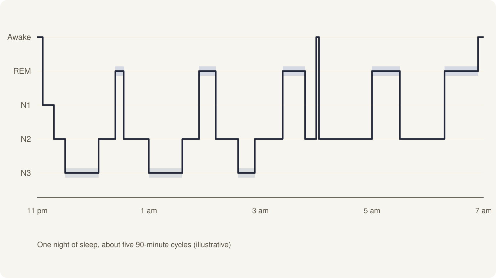
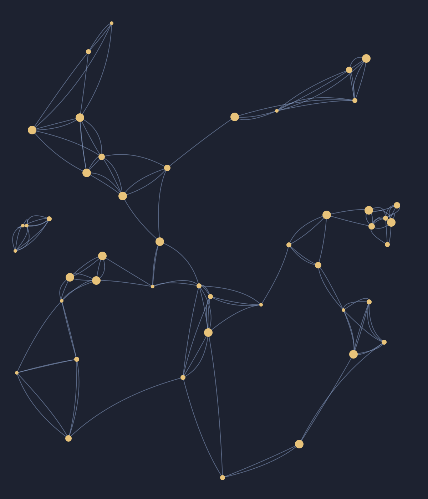
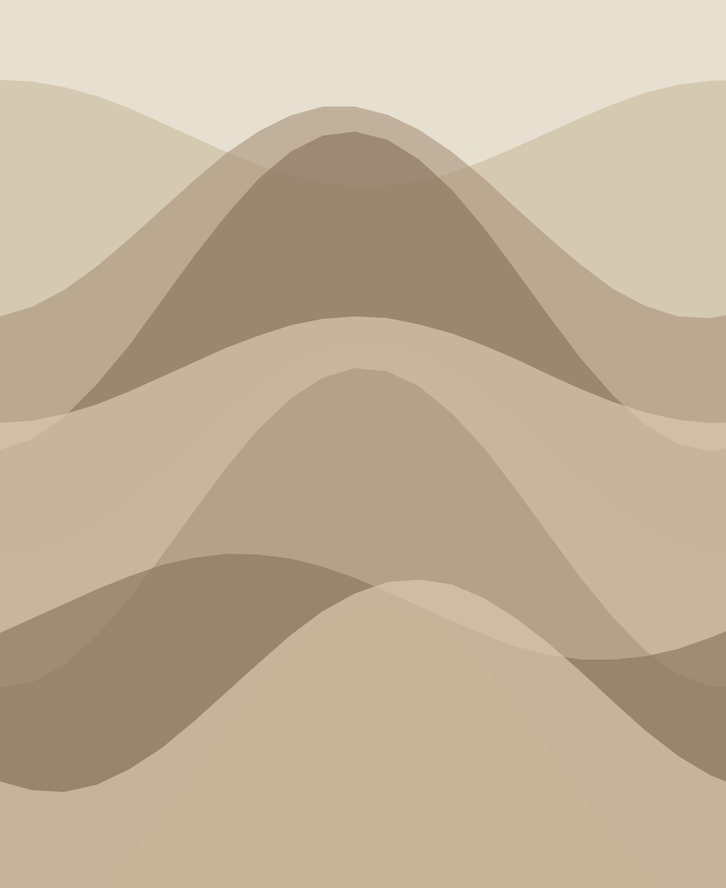
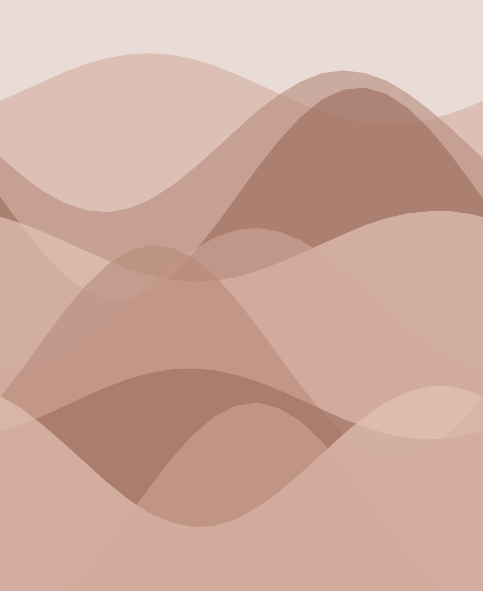

Minimum
6hours
Four cycles. Some REM lost.
- Lights out by 1 am
- Skip the last review
Cognitive Science 101Lecture 7
What the sleeping brain does with everything you learned today.
Today
01
Memories start fragile. Most of what we learn fades unless something stabilises it.
Consolidation
/kənˌsɒlɪˈdeɪʃən/ · noun
The process that turns a fragile new memory into a stable, long-term one — largely while we sleep.
“Without consolidation, a lecture is a story you heard once.”
Sleep after learning protects memories from being overwritten by the rest of the day.
02
One sleep cycle · about 90 minutes
Light sleep, a few minutes long. Easy to wake from.
Bursts of brain activity called sleep spindles help store new skills and facts.
Slow waves dominate. The hippocampus replays the day’s experiences.
Vivid dreams. Linked to emotional memory and connecting ideas.
A typical adult night
Deep sleep comes early; REM grows longer toward morning.
Cutting the last two hours costs you mostly REM.
Approximate textbook proportions for healthy adults.
Reading a hypnogram

REM across the night
The two-stage model

Replay
In 1994, Wilson and McNaughton recorded rats’ place cells. The cells that fired while the rats ran a maze fired again, in the same order, during their sleep afterwards.
03
A century of findings
Ebbinghaus measures how fast memories fade.
Jenkins & Dallenbach: less forgetting after sleep.
Aserinsky & Kleitman identify REM sleep.
Place cells re-fire during sleep.
Motor skills sharpen after a night’s sleep.
Same material, different night
Short on sleep
1 in 3
US adults regularly sleep less than the recommended seven hours.
Source: US Centers for Disease Control and Prevention.
The numbers to remember
7+
hours recommended for adults each night
~90
minutes in one full sleep cycle
4–6
cycles in a healthy night
1 in 3
adults who fall short
Stage by stage
| Stage | Brain activity | Linked to | Share of night |
|---|---|---|---|
| N1 | Slowing alpha to theta waves | Falling asleep | ~5% |
| N2 | Sleep spindles, K-complexes | Skills and facts | ~50% |
| N3 | Slow, large delta waves | Replay, fact memory | ~20% |
| REM | Fast, wake-like activity | Emotion, linking ideas | ~25% |
04
The usual plan
The problem
The material never gets a full night of slow-wave and REM sleep to settle in.
The fix
Study in the evening, sleep a full night, and test yourself over breakfast.
Effort vs. payoff
Where common study habits land for memory.
Free, and it doubles as consolidation.
Strong gains, but needs a plan.
Feels familiar, fades fast.
Hours spent, recall lost.
Effort
Payoff
The night before an exam
6hours
Four cycles. Some REM lost.
8hours
Five cycles, full morning REM.
9hours
After a short week of sleep.
Exam fortnight
New topics, one a day
Fill the gaps
Spaced recall, every 2 days
Light review only
7–9 hours, fixed bedtime
Wake rested
Practical advice
Try this week
Spend 15 minutes re-reading today’s notes before bed.
Get up at the same time every day, weekends included.
Next morning, write down what you remember without notes.
For the programmers
A tiny scheduler: each review doubles the gap.
def review_days(first=1, reviews=5):
# sleep happens between every review
day, gap = 0, first
for _ in range(reviews):
day += gap
yield day
gap *= 2
print(list(review_days())) # [1, 3, 7, 15, 31]Further reading


Teaching team
Tonight’s homework
Recap
Deep sleep replays the day. REM helps connect it to what you already know.
7+h
A night, for adults
4–6
Cycles in a healthy night
Cognitive Science 101Lecture 7 · Take-home issue
What your brain does after lights out